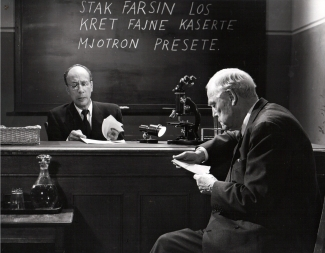
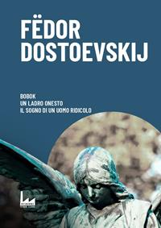
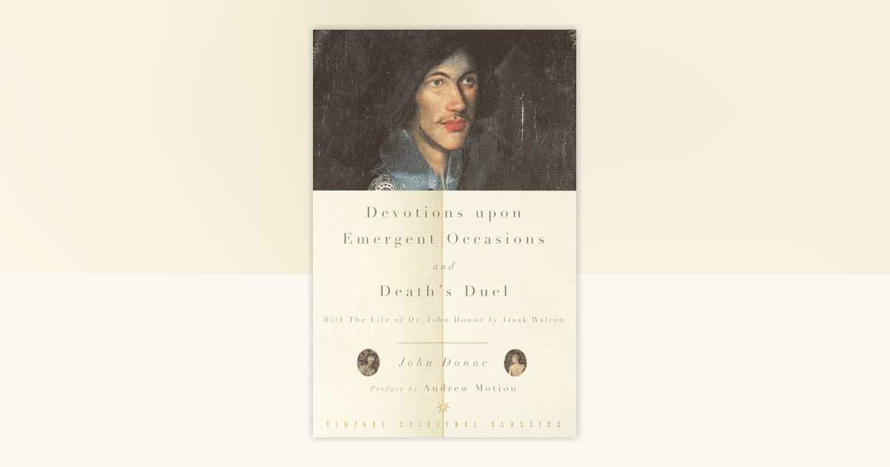
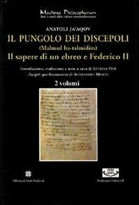

35:52 · 9 OPERE
Ad memoriam Guido Ceronetti.
Il filo del discorso
L’omaggio a Guido Ceronetti prende avvio con un momento di raccoglimento e con il ricordo di una voce capace, secondo il relatore, di mettere a disagio il proprio tempo. Il centro della lettura è Difesa della luna: la conquista tecnologica dello spazio viene accostata alla perdita di limiti e di sensibilità per la vita concreta. L’immagine dell’uroboro introduce un pensiero che interroga sé stesso invece di chiudersi nell’adesione a un sistema.
Leggi la sintesi completaRiduci la sintesi
Il relatore attualizza questa critica parlando di telefoni, distrazione e rapporti umani, con esempi che le note distinguono dai riscontri documentati. Il tema della morte occupa poi una parte ampia del contributo: una intervista a Ceronetti, Il posto delle fragole, Bobok, la metafora della traduzione in Donne e La roba di Verga permettono di discutere il rapporto fra finitezza, ricchezza e attaccamento alle cose. Anche l’aneddoto autobiografico di Michael Bloomberg è usato come termine di contrasto etico, senza assumerlo come prova di una condizione clinica. Nella parte finale, i passi di Ceronetti sul recinto e sulla legge conducono alla distinzione fra legalità e responsabilità morale. La conclusione richiama Il pungolo dei discepoli di Anatoli e i Proverbi: il maestro può amare anche attraverso una critica severa, mentre chi apprende deve saper ricevere una correzione. La scheda mantiene la natura commemorativa e polemica del discorso, precisando le identificazioni probabili e gli errori fattuali senza attribuire a Ceronetti tutte le posizioni personali del relatore.
I libri nel discorso

Difesa della luna e altri argomenti di miseria terrestre
Note sul riferimento
Copertina: Rusconi, 1971 · fotografia di un esemplare
Titolo, autore e prima edizione 1971 espliciti; letture e commenti proseguono nell’intero omaggio.

Il posto delle fragole (Smultronstället / Wild Strawberries)
Note sul riferimento
Fotografia del film: Il posto delle fragole: Fotografia del film del 1957, dall’archivio della Fondazione Ingmar Bergman; non una copertina libraria.
Fotografia ufficiale in bianco e nero, con Isak Borg durante un esame davanti a un esaminatore e a una lavagna. Non è una locandina né la copertina di un libro. Nessuna copia del film è attribuita al video.
Il posto delle fragole e Bergman espliciti nella spiegazione del nome Il posto delle parole.

Bobok
Note sul riferimento
Raccolta: Bobok – Il ladro onesto – Il sogno di un uomo ridicolo: Raccolta Bobok – Il ladro onesto – Il sogno di un uomo ridicolo, Urban Apnea 2021, 138 pagine; edizione di riferimento successiva al video.
Copertina autentica della raccolta di tre racconti, non copertina autonoma del solo Bobok. L’edizione 2021 è successiva al video del 2018 e non viene attribuita al relatore.
Bobok di Dostoevskij nominato esplicitamente; precisati datazione e ruolo del titolo.
Bloomberg by Bloomberg
Identificazione probabile
Note sul riferimento
Copertina: Wiley 2019, edizione Revised and Updated, 256 pagine; immagine di riferimento successiva al video. Prima edizione 1997.
Copertina autentica dell’edizione Wiley aggiornata del 2019, successiva all’omaggio del 2018. Il racconto riscontrato non permette di stabilire quale edizione sia stata letta dal relatore.
Biografia di Mike Bloomberg, titolo non pronunciato. La liquidazione da Salomon e la giacca per la moglie coincidono con il primo capitolo della sua autobiografia: identificazione probabile.

La roba
Note sul riferimento
Copertina della raccolta Tutte le novelle: Newton Compton · Tutte le novelle · MiniMammut 209 · a cura di Sergio Campailla
Copertina autentica della raccolta integrale Newton Compton, ISBN 9788822700612. La roba è una novella di Novelle rusticane, compresa nella raccolta; la copertina non appartiene a un volume autonomo della singola novella.
Mazzarò e La roba di Verga espliciti nel confronto con la paura di perdere i propri beni.

Meditation XVII, in Devotions upon Emergent Occasions
Identificazione probabile
Note sul riferimento
Raccolta: Devotions Upon Emergent Occasions and Death’s Duel: Copertina del volume contenitore Devotions Upon Emergent Occasions and Death’s Duel, Vintage 1999, prefazione di Andrew Motion, 272 pagine.
Immagine editoriale autentica del volume contenitore. La Meditation XVII è una meditazione in prosa, non una poesia autonoma; questa edizione non è attribuita al filmato.
Donne esplicito, titolo non pronunciato. Vita e morte come capitoli e traduzione identificano probabilmente la Meditation XVII, non una poesia.

Genesi
Identificazione probabile
Note sul riferimento
Copertina: Einaudi, I libri della Bibbia / Einaudi Tascabili, 2000; introduzione di Steven Rose
Copertina dell’edizione autonoma Genesi, nella serie I libri della Bibbia, con introduzione di Steven Rose. Edizione scelta come riferimento iconografico; nessuna edizione è confermata nel video.
Caino e Abele identificano Genesi 4; titolo del libro biblico non pronunciato in questo richiamo.

Il pungolo dei discepoli. (Malmad ha-talmidim). Il sapere di un ebreo e Federico II
Note sul riferimento
Copertina: Officina di Studi Medievali, Palermo 2004, Machina philosophorum 7, due volumi, a cura di Luciana Pepi; testo ebraico e traduzione italiana.
Copertina autentica dell’edizione in due volumi, con la dicitura 2 volumi visibile. Non è una fotografia dei due tomi affiancati e l’edizione non viene attribuita al video.
Il pungolo dei discepoli di Anatoli nominato; grafia dell’autore normalizzata su Luciana Pepi e sul catalogo editoriale.

Proverbi
Note sul riferimento
Copertina della Bibbia che contiene Proverbi: San Paolo, 2014 · Nuova Versione dai Testi Antichi · edizione di riferimento
Copertina dell’intera Bibbia. Non rappresenta un’edizione autonoma dei Proverbi e non identifica l’edizione citata nel video.
Proverbi 3,11 e seguenti espliciti: correzione, amore paterno e valore della sapienza.